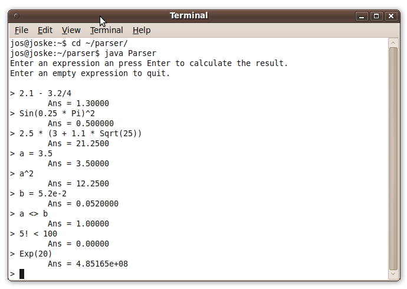

Description
On this page you find the source code for an expression parser written with Java. It is a small console program with all common mathematical features. The project was written using the free Geany, a nice Java editor. The project consist of three source files, listed at the left of this page. You can view the source files online, or download the project including executable.
To compile the program, you can use the features inside a Java editor such as Geany, or you can enter "javac Parser.java" on a command line.
To run the program, you can either press the run button inside a Java editor such as Geany, or you can enter "java Parser" on a command line.
Features
The features of the expression parser are:-
Operators:
- & | << >>
- = <> < > <= >=
- + -
- * / % ||
- ^
- !
-
Functions:
- Abs, Exp, Sign, Sqrt, Log, Log10
- Sin, Cos, Tan, ASin, ACos, ATan
- Factorial
-
Variables:
- Built-in: Pi, e
- You can define your own variables
-
Other:
- Support for scientific notation
- Built-in error handling
Screenshot
As Java programs can be run on various platforms, you can execute the program on Windows, Linux, or Macintosh. Here is a screenshot taken on Ubuntu. 
References
The expression parser is built in the way most common parsers are built. The code is based on the example "A mini C++ Interpreter" from the book "The art of C++" by Herbert Schildt. The C++ version of this expression parser is also available on this website, which is ported to Java.
Jos de Jong
January 2010